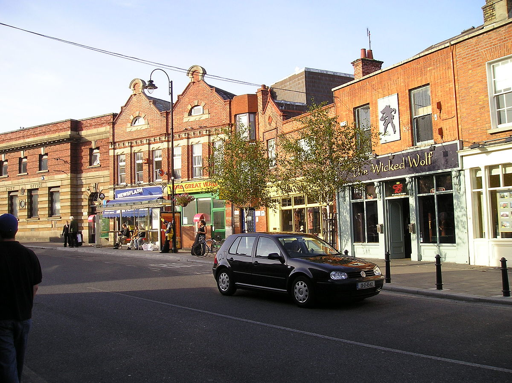
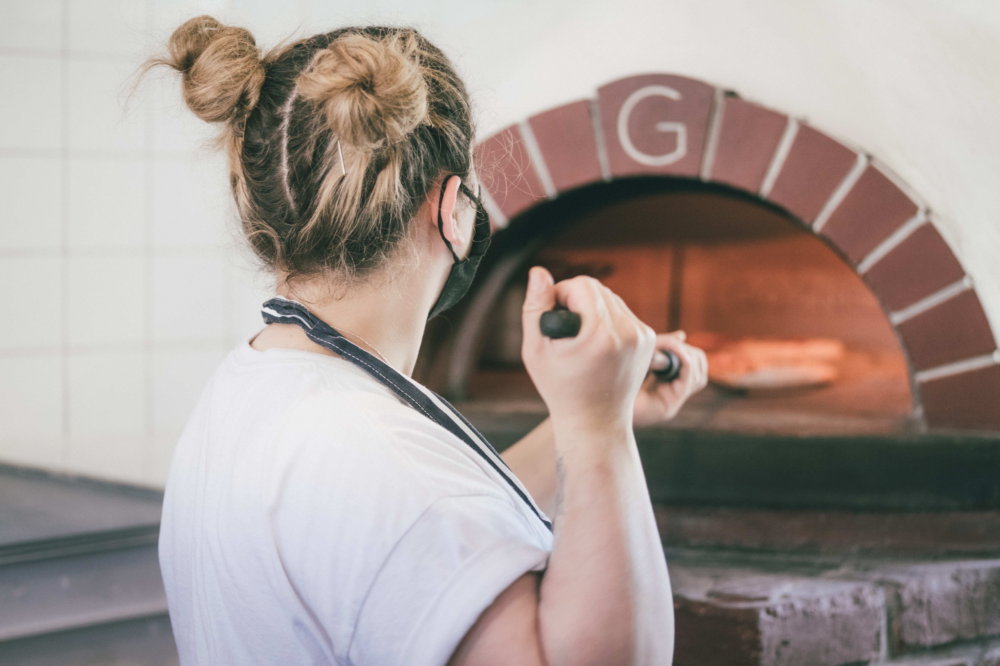

Zeddz Pizza
How we started

Zeddz Pizza was founded by Paul Zedd in 2018. Paul is a man from south Dublin with a lifelong passion for stone baked great quality pizza. After the passing of his father in 2014 Paul set out to create his pizza branch which is focused on quality and a personal touch. He has spent years researching and sampling some of the many variations of pizza types around Italy and has brought them back to Ireland to share only the best choices from his ventures to Italy and surrounding countries. Paul studied as a chief in college and has always maintained a passion for the quality of ingredients he puts in his food.
Where we are now
We have been lucky enough to expand our brand to six different branches throughout Dublin starting in Blackrock we then opened branches in Dun Laoghaire Dalkey and Bray and then two more branches in North Dublin Swords and then Phibsborough. Our goal is to bring the quality of Zeddz pizza to as much of Ireland as possible and connect with as many people as possible. We do not plan on expanding outside of Ireland because I was Pauls goal to make the best quality pizza for his home county and to maintain a great quality of pizza in Ireland that people from everywhere could appreciate.
Our staff
At Zeddz pizza we have a passion for people. When we think of our staff, we think of them as a family of people who are equally passionate about the quality of food as we are. We want to connect to local communities and be thought of as somewhere all people are welcome to come and enjoy our product. While we do prefer if you have a previous background in the art of making pizza, we do offer on-site training to develop the skill of our already talented staff. A company is only as good as its staff so we want to ensure the quality of their skills so that our brand can grow.
Our Promise

At Zeddz pizza we care about what our customers think, We if you don’t feel like your pizza was up to the quality you expected we welcome any feedback so that we can improve our service. Our promise is that we will do our up most to maintain our best possible standard of pizza and to keep our customers happy. If you’re not happy, were not happy.